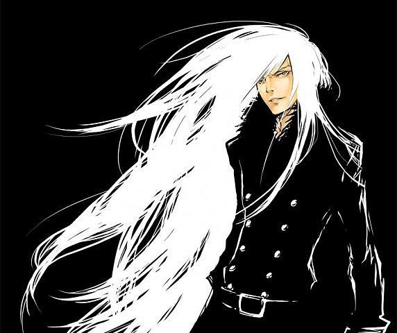
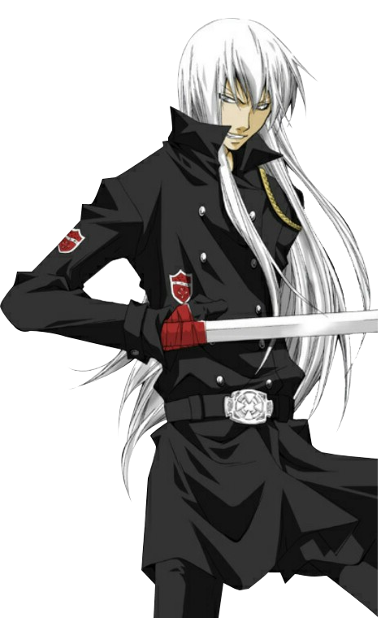

| Superbia Squalo (史佩爾畢•史庫瓦羅) |
| スペルビ・スクアーロ, Superubi Sukuāro |
|  |
| Biographical information |
| Age |
22 |
| Birthday |
March 13 |
| Physical description |
| Gender |
Male |
| Height |
182 cm |
| Weight |
75 kg |
| Blood type |
O |
| Underground information |
| Flame |
Sun Flame |
| Equipment |

Artificial Arm Sword |
| Box Animal |

Alo |
Squalo's most notable feature is his long, straight silver/white hair, which he keeps long to show his dedication to his boss, Xanxus, and he refuses to cut it until Xanxus replaces Tsunayoshi Sawada as the 10th Vongola boss. When he was younger, before Xanxus' imprisonment, his hair was spiky at the back and kept short. In the future, his hair tends to cover his right eye, with one strand hanging down the center of his face. His eyes and eyebrows are light grey in colour.
.